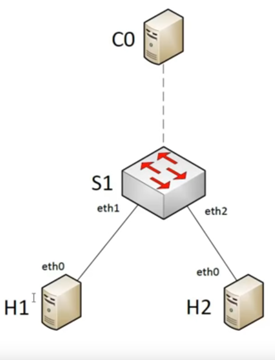
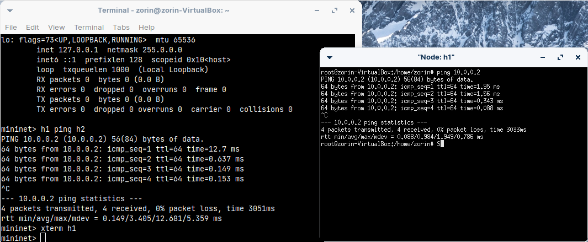
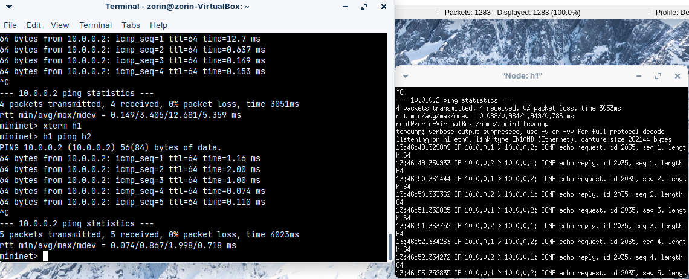
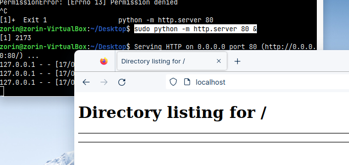
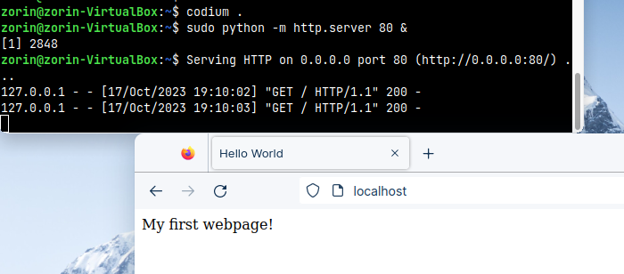

Mininet is a network emulator that can be used to construct a virtual network which runs real kernel, switch and application code, on a single Linux machine. Once these components are initialized, they can be interacted with through a command line interface or scripts. Furthermore, topologies may be created in Python Scripts. The routing in mininet is configured using OpenFlow, an important protocol in Software-Defined Networking (SDN). As with networks in general, there is quite a bit to learn, it’s best to start simple and work up from there!
To start using mininet, launch the updated VirtualBox images provided, open a terminal and run the following:
Recall, the password for our virtual machine is zorin.
$ sudo mn
[sudo] password for zorin:
*** Creating network
*** Adding controller
*** Adding hosts:
h1 h2
*** Adding switches:
s1
*** Adding links:
(h1, s1) (h2, s1)
*** Configuring hosts
h1 h2
*** Starting controller
c0
*** Starting 1 switches
s1 ...
*** Starting CLI:
mininet>
The summary provides an overview of what mininet has constructed - we have build a virtual network architecture consisting of two hosts, h1 and h2, a controller, c0, and a switch, s1. Further, the hosts h1 and h2 are each connected to the switch.
A host represents an end user device, such as a PC. In mininet, these run standard linux network code, and will be able to make use of some networking utilities you have used in other classes. It will also let you run applications you have developed on the virtual network, as well as give access to the VirtualBox’s filesystem.
A switch represents a traffic routing device. The routing method will be configured from the controller using OpenFlow, which we will discuss in the next section. At its simplest, you may think of a switch as a device with many connections to other devices which relies on a routing table to determine where to send packets.
The following shows the topology:

(Credit: David Mahler)
Finally, a command line interface was started. This uses mininet commands to allow us to issue commands to our network components, for example, to test connectivity and debug operations.
For now, let us attempt to run some commands on one of the hosts.
To see list of commands available, type:
Note that, going forward, whenever you see mininet> at the beginning of a prompt, this is to be run on the mininet command line.
This will list some common operations you may wish to perform, such as:
Documented commands (type help <topic>):
========================================
EOF gterm iperfudp nodes pingpair py switch xterm
dpctl help link noecho pingpairfull quit time
dump intfs links pingall ports sh wait
exit iperf net pingallfull px source x
You may also send a command to a node using:
<node> command {args}
For example:
mininet> h1 ifconfig
The interpreter automatically substitutes IP addresses
for node names when a node is the first arg, so commands
like
mininet> h2 ping h3
should work.
Some character-oriented interactive commands require
noecho:
mininet> noecho h2 vi foo.py
However, starting up an xterm/gterm is generally better:
mininet> xterm h2
You can also get help about a specific question:
mininet> help nodes
List all nodes.
Let’s check to see which nodes are available:
mininet> nodes
available nodes are:
c0 h1 h2 s1
Next, let’s investigate which links are connected:
h1 h1-eth0:s1-eth1
h2 h2-eth0:s1-eth2
s1 lo: s1-eth1:h1-eth0 s1-eth2:h2-eth0
c0
So we can see that h1-eth0 port is connected to s1-eth1 port. We can envision this as a physical connection, with an ethernet cable connected to a physical switch device. However, at this point we don’t know if this is acting as a hub or a smart switch.
We can also collect some additional information about our network with the following command:
<Host h1: h1-eth0:10.0.0.1 pid=1812>
<Host h2: h2-eth0:10.0.0.2 pid=1814>
<OVSSwitch s1: lo:127.0.0.1,s1-eth1:None,s1-eth2:None pid=1819>
<Controller c0: 127.0.0.1:6653 pid=1805>
We can see the mininet classes being used (Host, OVSSwitch, Controller), IP-addresses assigned to our devices (10.0.0.1, 10.0.0.2), the port that our controller is running its router configuration service on (6653), and process id’s for this appliance in our virtual machine.
We will investigate the role of the controller in the next section, however it is important to note that it is a service which the OVSSwitch’s may talk to to learn how properly to route their packets.
We wish to run a command on a node. Let’s start by investigating the network interface of one of our hosts:
h1-eth0: flags=4163<UP,BROADCAST,RUNNING,MULTICAST> mtu 1500
inet 10.0.0.1 netmask 255.0.0.0 broadcast 10.255.255.255
inet6 fe80::8c74:3cff:feeb:7159 prefixlen 64 scopeid 0x20<link>
ether 8e:74:3c:eb:71:59 txqueuelen 1000 (Ethernet)
RX packets 43 bytes 4488 (4.4 KB)
RX errors 0 dropped 0 overruns 0 frame 0
TX packets 13 bytes 1006 (1.0 KB)
TX errors 0 dropped 0 overruns 0 carrier 0 collisions 0
lo: flags=73<UP,LOOPBACK,RUNNING> mtu 65536
inet 127.0.0.1 netmask 255.0.0.0
inet6 ::1 prefixlen 128 scopeid 0x10<host>
loop txqueuelen 1000 (Local Loopback)
RX packets 0 bytes 0 (0.0 B)
RX errors 0 dropped 0 overruns 0 frame 0
TX packets 0 bytes 0 (0.0 B)
TX errors 0 dropped 0 overruns 0 carrier 0 collisions 0
This confirms what we saw earlier, that we have an emulated ethernet device which is available on the network. It has the same ipv4 address we saw earlier (10.0.0.1).
Let’s have this host ping the other host:
This will start the ping operation, which will continue indefinitely. You may press ctrl+c to terminate this process.
PING 10.0.0.2 (10.0.0.2) 56(84) bytes of data.
64 bytes from 10.0.0.2: icmp_seq=1 ttl=64 time=12.7 ms
64 bytes from 10.0.0.2: icmp_seq=2 ttl=64 time=0.637 ms
64 bytes from 10.0.0.2: icmp_seq=3 ttl=64 time=0.149 ms
64 bytes from 10.0.0.2: icmp_seq=4 ttl=64 time=0.153 ms
^C
--- 10.0.0.2 ping statistics ---
4 packets transmitted, 4 received, 0% packet loss, time 3051ms
rtt min/avg/max/mdev = 0.149/3.405/12.681/5.359 ms
The ping succeeded - the network is successfully connected. You will notice the first ping required additional time. This is because the switch did not know where to send the packet, and needed to communicate with the controller server over the openflow protocol to learn where to send the packet. Once the switch knows, it will cache this address in it’s local routing table, so subsequent sends are quicker. After a set amount of time, a timeout will occur, and the cached routing table is erased, and new rules are determined. Why might this be important?
Solution
Because physical devices may change over time, and thus the most efficient path to the destination may change too. Imagine if your switch had 10 ports, and you unplugged your PC from port 4 and plugged it into port 5. The router would need to learn the new location of this device to successfully deliver its packets!
Sometimes, it may useful to spawn an extra terminal window which is running directly on each host. You may do this with the following command:
This environment is inside the host, thus some shortcuts available for us in the mininet command line will not be present. For example, in order to perform a ping, we will require the full IP address of the second host:

In previous labs we observing traffic coming to a device using WireShark. We will return to this in a later section. For now, a simpler way to see when packets arrive at a host is using a utility available on the device via the xterm window
Head back to the mininet window, and create some traffic to the PC:

When you wish to close the xterm terminal, simply type exit.
Another way to test connectivity in mininet is to use the pingall command:
mininet> pingall
*** Ping: testing ping reachability
h1 -> h2
h2 -> h1
*** Results: 0% dropped (2/2 received)
This quickly shows us that all devices are successfully connected.
Running a simple HTTP server in python
*note, in the new version of the virtualbox, I have updated the python variable to point to python3, so we may use this terminology going forward.
One of the best things about mininet is that we can run real application code on our hosts. Did you know python can host a simple webserver right from the commandline? Let’s try it out, in our local VirtualBox environment to start:
sudo python -m http.server 80 &
And then, using Firefox, we can access this

This runs it in the background. We may bring it back to the foreground with fg and close it with ctrl+c
Of course, this directory listeing is pretty boring. It would be better if served an actual webpage. Let’s create one in our home directory:
Create a new file called index.html, and use Emmet to get some boilerplate (!), and then fill in content!
<!DOCTYPE html>
<html lang="en">
<head>
<meta charset="UTF-8">
<meta name="viewport" content="width=device-width, initial-scale=1.0">
<title>Hello World</title>
</head>
<body>
My first webpage!
</body>
</html>
Let’s start our server again, and see if we can see our new page:

So that’s neat. Let’s try this on our host in mininet:
mininet> h1 python -m http.server 80 &
However, this is not a graphic environment. On the second host, let’s use a built in linux utility to grab the page, wget, dumping the output (-O) to the console (- means stdout)
mininet> h2 wget -O - h1
--2023-10-17 19:18:45-- http://10.0.0.1/
Connecting to 10.0.0.1:80... connected.
HTTP request sent, awaiting response... 200 OK
Length: 225 [text/html]
Saving to: ‘STDOUT’
- 0%[ ] 0 --.-KB/s <!DOCTYPE html>
<html lang="en">
<head>
<meta charset="UTF-8">
<meta name="viewport" content="width=device-width, initial-scale=1.0">
<title>Hello World</title>
</head>
<body>
My first webpage!
</body>
- 100%[===================>] 225 --.-KB/s in 0s
2023-10-17 19:18:45 (1.15 MB/s) - written to stdout [225/225]
When we are finished, let’s exit our server:
When you are finished with mininet, you can close it with:
However, occasionally mininet will not close gracefully and may leave zombie processes running. The ensure these resources and ports are free for your next emulation, run the cleanup step: